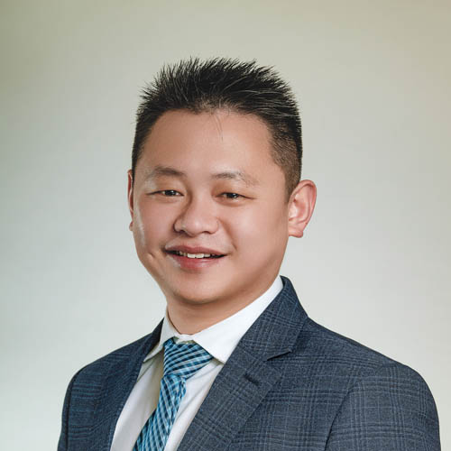
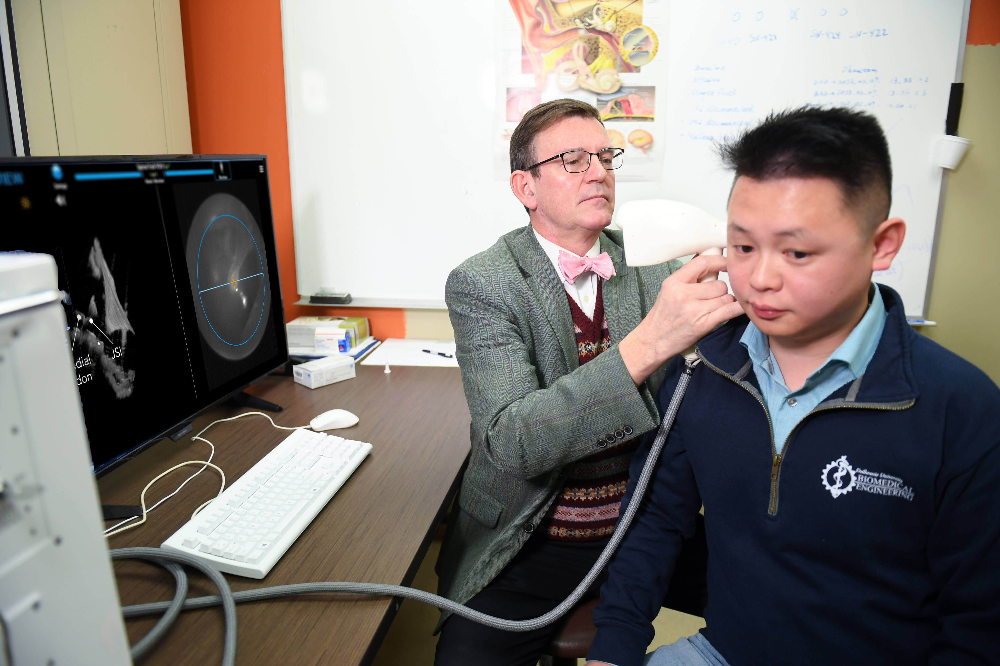
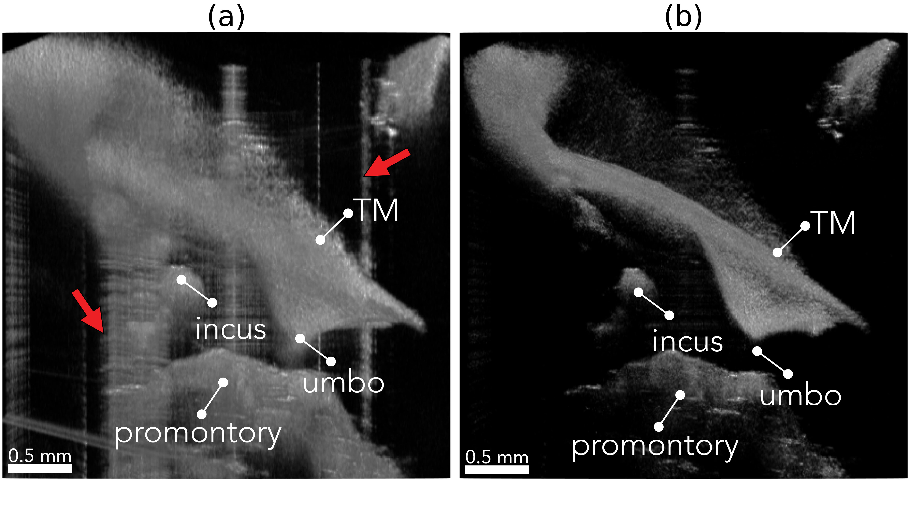
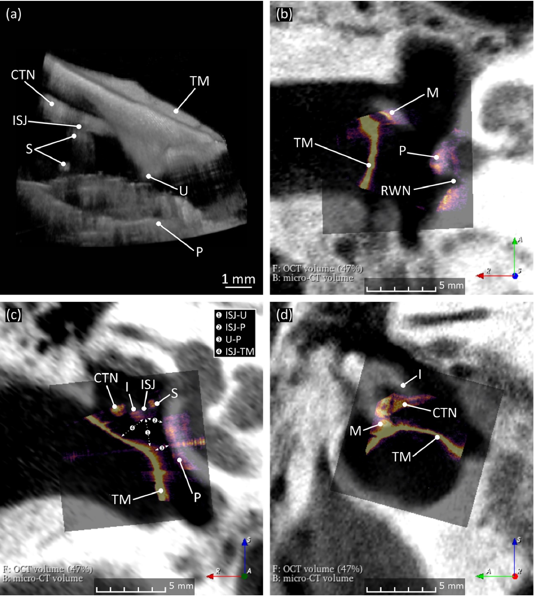
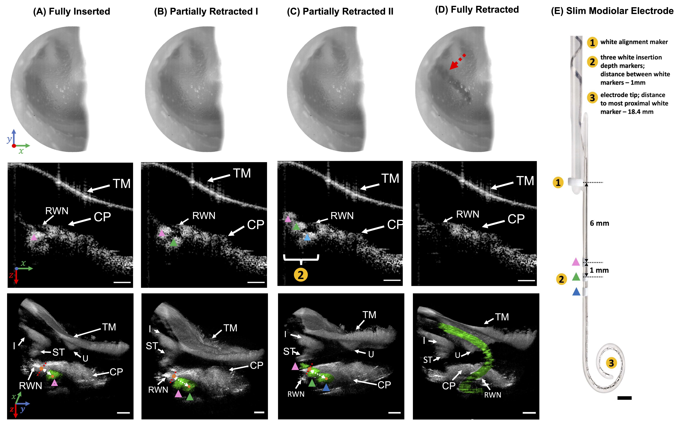
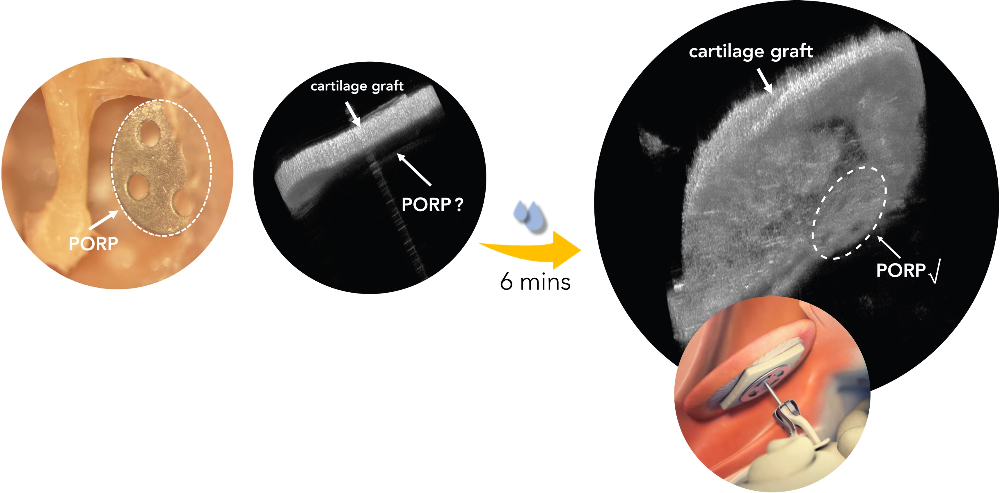
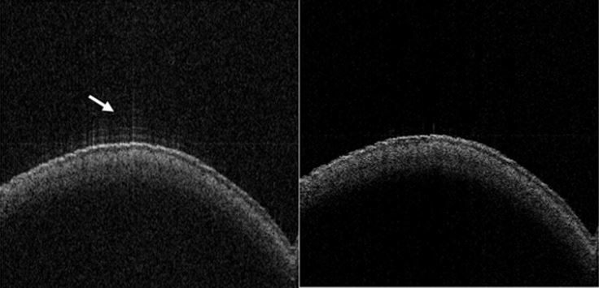

|
I'm Junzhe "Young" Wang | 王俊哲.
I’m a PhD student at
Rice University, I
am fortunate to be advised by
Dr. Ashok Veeraraghavan. My research interests include computational imaging and its biomedical
applications, with a focus on improving healthcare outcomes and making a tangible impact.
I am also a proud two-time alumnus of
Dalhousie University. During my master’s, I had the privilege of working with
Dr. Robert Adamson. I worked on the development and commercialization of the first clinical middle-ear OCT
system (ME-OCT), for which I was honored with the
Governor General's Gold Medal. I also had the opportunity to work in
Dr. Vincent Sieben's lab on ocean sensing with microfluidic pumps during my undergraduate.
|

|
-
2025.01.13:
First day as a Rice student, proudly joining the amazing
Computational Imaging Lab!
-
2024.05.28:
Over the moon to be honored with the prestigious
Governor General's Gold Medal. A big thanks to Rob, Dr. Morris, Josh, and everyone else who’s been there for me. Couldn’t have done it without your support!
-
2024.01.02:
Thrilled to kick off the year as a
Medventions Fellow at Sunnybrook Research Institute.
-
2023.10.04:
Officially received my master’s in Biomedical Engineering from Dalhousie University. What a journey it’s been!
Research ( * denotes equal contribution)
|
|

|
Clinical Applications of Handheld Middle Ear Optical Coherence Tomography (ME-OCT) with Live Volumetric Visualization: Clinical Applications of 4D ME-OCT
Otology & Neurotology, 2024
A custom-built OCT system enabling continuous 4D imaging of the middle ear for clinical applications such as the Valsalva maneuver, partial ossicular prosthesis (PORP), and cochlear implant (CI) surgeries.
|
|

|
Improved Middle Ear Imaging with Optical Coherence Tomography for Clinical Otology
Dalhousie University, 2023
This thesis introduces two approaches to enhance middle ear OCT visualization: a convolutional basis pursuit framework to reduce sidelobe artifacts and a topical glycerol treatment to improve visualization for postoperative ear.
|
|

|
Geometrically Accurate Real-time Volumetric Visualization of the Middle Ear Using Optical Coherence Tomography
Biomedical Optics Express, 2023
We present a handheld system for live, geometrically accurate volumetric middle ear OCT imaging. Using a discretized spiral scanning (DC-SC) pattern, the system rapidly acquires data and corrects geometric distortions.
|
|

|
Transtympanic Visualization of Cochlear Implant Placement with Optical Coherence Tomography: A Pilot Study
Otology & Neurotology, 2022
This study evaluates the ability of transtympanic middle ear optical coherence tomography (ME-OCT) to assess placement of cochlear implants (CIs) in situ.
|
|

|
Optical Clearing Agents for Optical Imaging Through Cartilage Tympanoplasties: A Preclinical Feasibility Study
Otology & Neurotology, 2022
Optical clearing agents (OCAs) can render cartilage tympanoplasty grafts sufficiently transparent to permit visualization of middle ear structures in an operated ear using optical coherence tomography (OCT) imaging.
|
|

|
Convolutional Dictionary Learning for Blind Deconvolution of Optical Coherence Tomography Images
Biomedical Optics Express, 2022
In this study, we demonstrate a sparsity-regularized, complex, blind deconvolution method for removing sidelobe artefacts and stochastic noise from optical coherence tomography (OCT) images. |
|
{kind=link}